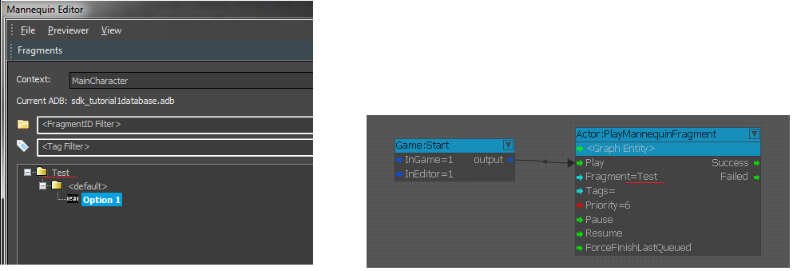
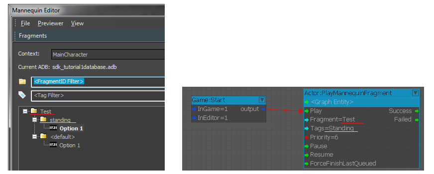
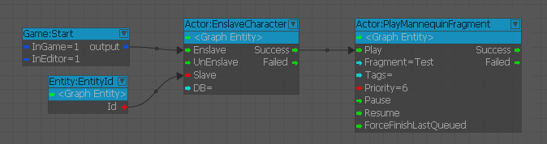

Overview
Some of the Mannequin features are available through the use of some dedicated FlowGraph nodes:
- PlayMannequinFragment lets you query a mannequin fragment on a given entity.
- EnslaveCharacter can help you link multiple characters in order to play synchronized animations.
For a tutorial about using some of these features, see Tutorial - Mannequin Scripting.
PlayMannequinFragment
PlayMannequinFragment will look for a Fragment to play using the provided FragmentID and TagState. The fragment found will be wrapped in a Mannequin Action and queued with the given priority. The node can then also stop this action using the "ForceFinishLastQueued" input, or pause/resume the entire Mannequin ActionController.
Below is a basic example. You can see the Mannequin setup on the left, and how to use the PlayMannequinFragment node in FlowGraph on the right.

The following example shows how to use FragmentID-specific Tags (fragtags) to refer to a more specific fragment.
Multiple tags can be used: just separate them with the '+' character.

Important notes when using the PlayMannequinFragment node:
- This node will queue an action referring to the specified fragment, but it doesn't make any guarantee on the state of the target entity. When using this node, please make sure that querying fragments will not conflict with AI, player, or general game logic if the entity you're targeting is also driven by some game code.
- Make sure you know who is in charge and if it's safe to play an action when you do.
- In general the movement fragments run at a priority of 4, hit reactions at 5 and death reactions at 6. Chose your priority according to what you wish to interrupt or not.
- The action is not shared across nodes, meaning that you cannot queue an action with a node and stop it with another one.
EnslaveCharacter
This node can be used to enslave a character to another one in order to play synchronized animations. Please refer to Mannequin Synchronizing Characters for more details on how synchronized animations work with Mannequin.
When enslaving a character you can optionally use a different Animation Database File (ADB) if needed. This depends on the way the slave is setup in the mannequin editor. If you leave this field empty, fragments will be queried from the host's animation database.
Below is a simple example. A character will be enslaved to another one, and then a fragment will be called on the host. If the "Test" FragmentID is setup accordingly, this will result in a synchronized animation getting triggered.

Actor:ProcClipEventListener
(CRYENGINE 3.7 and above)
Use this procedural clip to listen to events sent using the FlowgraphEvent procedural clip type.